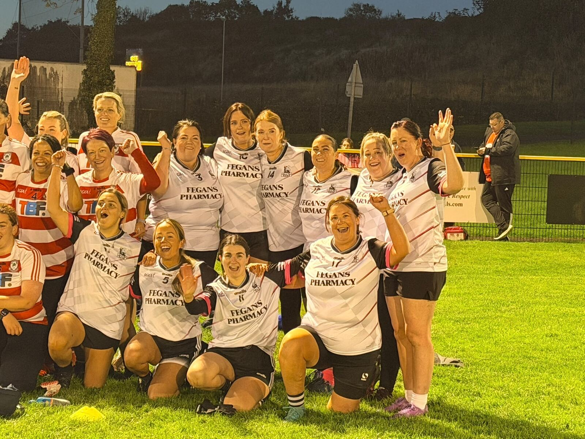
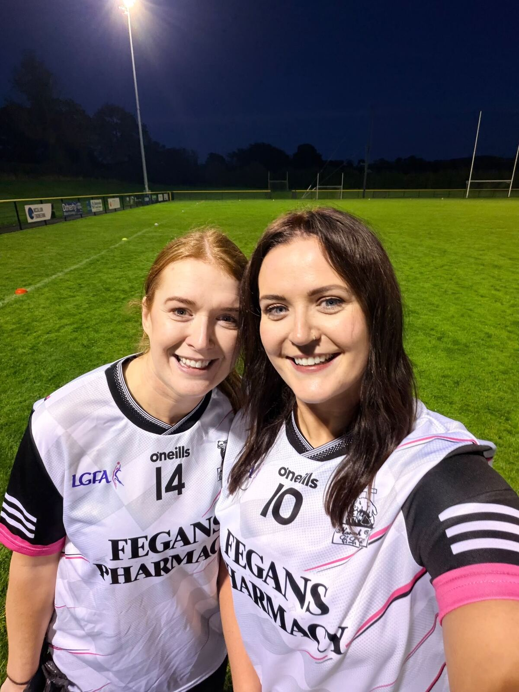
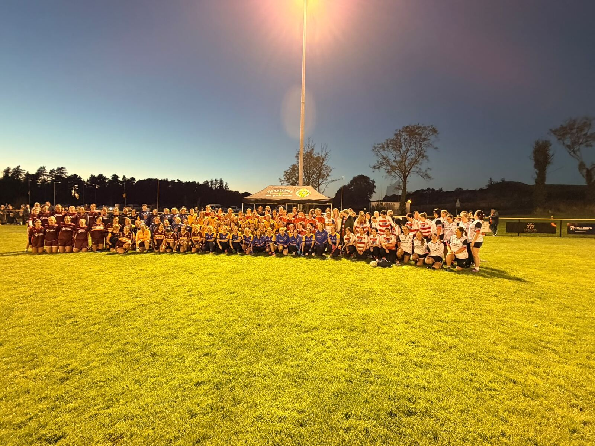
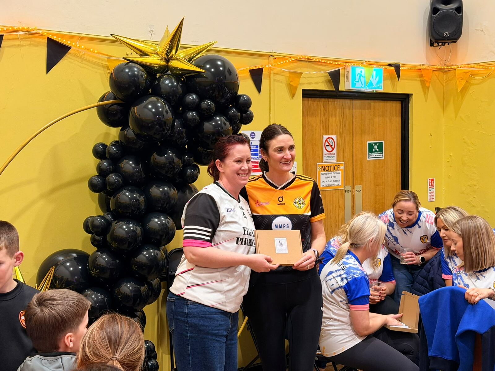
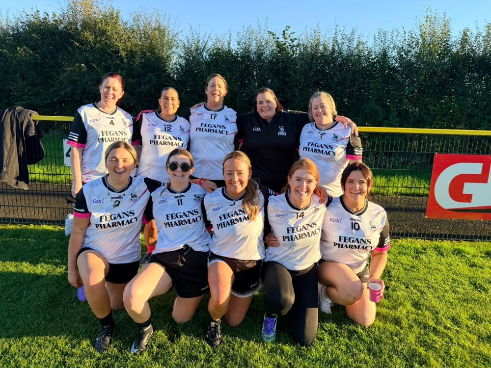

The highlight of the week was another fantastic outing for our brilliant Gaelic for Mothers & Others team.

Another Brilliant Blitz for Our G4M&O Team
Well done to our brilliant Gaelic for Mothers & Others team on another hugely successful blitz in Portglenone on Saturday, hosted by Roger Casements.
The girls brought great energy, teamwork and plenty of smiles throughout the evening. They were ready for war—and Prosecco! 🥂
A massive thank you to Roger Casements for the warm welcome and for hosting such an enjoyable event. Another memorable night for this fantastic group and another proud moment for St Agnes.

All smiles in Portglenone.

A brilliant gathering of G4M&O teams.

A lovely presentation to mark the occasion.

The team together after the Portglenone blitz.
Ní neart go cur le chéile. Aggies Abú! 🖤🤍
19–25 October 2026
The Week Ahead
The U12 girls begin their Winter League campaign, with three further training sessions confirmed as club activities start to wind down for the year.
Monday 19 October
U12 Girls Winter League Blitz
5:00pm · Woodlands
Tuesday 20 October
G4M&O Training
7:00–8:00pm · Woodlands
Thursday 22 October
U14 & U16 Boys Training
6:00–7:00pm · Woodlands 4G
Thursday 22 October
U14 Girls Training
7:00–8:00pm · Woodlands 4G
Friday 23 October
Juvenile Training
6:00–7:00pm · Woodlands 4G
All new children are very welcome.
Thank you to all our players, coaches, families and volunteers.